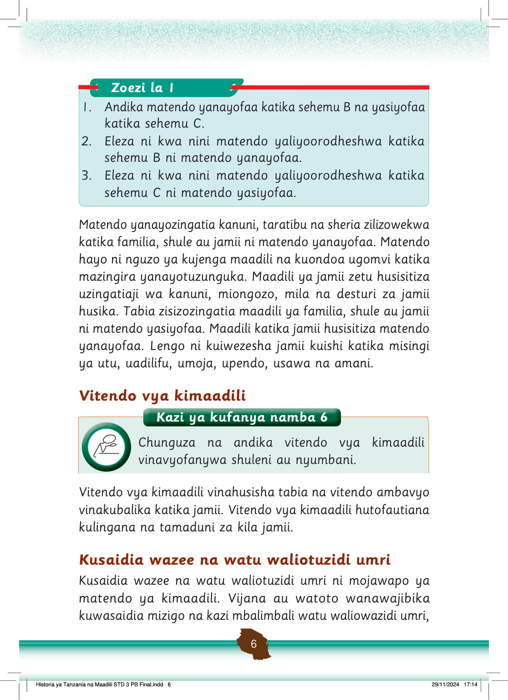

nyumbani na shuleni.
Kitendo cha kijana au mtoto kumsaidia mzee na mtu aliyemzidi umri huonesha upendo na heshima kama ilivyo katika Kielelezo namba 1.
Kielelezo cha kwanza kinaonesha bibi mzee akitembea kwa kutumia fimbo kwenye njia ya kijijini. Pembeni yake, mtoto wa kike amebeba kikapu kikubwa kichwani ili kumpunguzia bibi mzigo. Kitendo hiki kinaonesha upendo, msaada na heshima kwa watu wenye umri mkubwa.
Kielelezo namba 1: Mtoto akimsaidia mzigo mzee
Kuwatunza, kuwathamini na kuwalea wazee ni matendo ya kimaadili.
Maadili yanasisitiza kutembelea wazee na kuwahudumia kwa kuwapa zawadi na chakula kama inavyoonekana katika Kielelezo namba 2.
Pia, tunasisitizwa kuwasaidia kazi mbalimbali.
Kielelezo cha pili kinaonesha kijana wa kike akiwa ameinama karibu na meza ndogo, akimwandalia mzee chakula na kinywaji. Mzee ameketi kwenye kiti na kunyoosha mkono kuelekea chakula. Kitendo hiki kinaonesha kumtunza, kumhudumia na kumheshimu mtu mzima.
Kielelezo namba 2: Kijana akimwandalia mzee chakula
Historia ya Tanzania na Maadili STD 3 PB Final.indd 7
29/11/2024 17:14